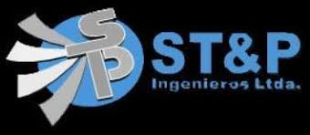

Presentación Profesional
Soy tecnólogo en Procesos de la Industria Química con más de diez años de experiencia en operación de plantas industriales, generación de vapor y sistemas de utilidades energéticas. Durante mi trayectoria he trabajado en operación de calderas acuotubulares y pirotubulares, turbogeneradores, compresores centrífugos y sistemas de tratamiento de agua por ósmosis inversa, así como en operaciones de transferencia de hidrocarburos y monitoreo de variables de proceso. Me especializo en mantener la continuidad operativa de los procesos, aplicando estrictamente los lineamientos de seguridad industrial (HSE) y buenas prácticas operativas en entornos de alta exigencia técnica. Actualmente me encuentro interesado en oportunidades como Operador de Planta, Operador de Utilidades Industriales o posiciones relacionadas con generación de energía y procesos industriales.
Experiencia Profesional

Ecopetrol S.A.
Aprendiz Técnico Productivo | 2024 – 2025- Apoyo en la operación de sistemas de utilidades industriales: generación de vapor, aire comprimido y tratamiento de agua.
- Monitoreo y control de sistemas de tratamiento de agua por ósmosis inversa y torres de enfriamiento.
- Seguimiento a variables críticas de operación en equipos rotativos y sistemas de generación de energía.
- Participación en rutinas operativas y cumplimiento de procedimientos HSE en instalaciones industriales.

Masa Stork
Operador de Oleoducto | 2022 – 2023- Operación y monitoreo de sistemas de transporte de hidrocarburos por ductos.
- Inspección y mantenimiento operativo de trampas de recibo y envío de herramientas de limpieza.
- Control de variables de presión, caudal y temperatura para garantizar la integridad del sistema.
- Aplicación de procedimientos de seguridad industrial en operaciones de transporte de hidrocarburos.

Impala Terminals
Tankerman | 2014 – 2021- Coordinación de operaciones de transferencia de hidrocarburos entre barcazas y terminales fluviales.
- Operación de sistemas de bombeo y líneas de transferencia para carga y descarga de productos.
- Control de volúmenes transferidos y verificación de interfaces de producto.
- Cumplimiento de protocolos de seguridad y control ambiental en operaciones fluviales.

Termipetrol
Operador de Turbina y Calderas | Termobarranca | 2011 – 2014- Operación de calderas acuotubulares para generación de vapor en procesos industriales.
- Supervisión de parámetros operativos de presión, temperatura y caudal en sistemas de vapor.
- Operación de turbogeneradores para suministro de energía en instalaciones industriales.
- Ejecución de rondas operativas y reporte de condiciones anormales en equipos de generación.

ST&P Ingenieros
Operador de Turbina y Calderas | Termobarranca | 2013- Apoyo en la operación de sistemas de generación de vapor mediante calderas industriales.
- Monitoreo de equipos rotativos y sistemas auxiliares de generación energética.
- Control de variables operativas desde campo y coordinación con sala de control.
- Aplicación de procedimientos de operación segura en sistemas de generación térmica.
ST&P Ingenieros
Operador de Planta | Termobarranca | 2012- Apoyo en actividades de operación y mantenimiento en sistemas de generación de vapor.
- Inspección operativa de bombas, válvulas y equipos auxiliares de planta.
- Seguimiento a variables de operación para garantizar continuidad del proceso.
- Reporte de condiciones anormales y apoyo en rutinas de mantenimiento preventivo.
Termipetrol
Operador de Calderas | Termobarranca | 2011- Operación inicial de sistemas de generación de vapor en calderas industriales.
- Control de parámetros operativos de combustión, presión y temperatura.
- Apoyo en arranque, parada y estabilización de equipos de generación térmica.
- Inspección de equipos y reporte de condiciones operativas en planta.

Fabio Moncada Montoya
Operador Mantenedor de Planta | Termobarranca | 2010 – 2011- Ejecución de rondas operativas para inspección de equipos y sistemas de planta.
- Mantenimiento preventivo básico en bombas centrífugas y motores eléctricos.
- Control de lubricación, vibración y presión en equipos rotativos.
- Reporte de condiciones anormales para garantizar continuidad operativa.
Formación Académica

Tecnología en Procesos de la Industria Química
SENA | Finalización estimada 2026
Formación Complementaria
Trabajo Seguro en Alturas
Certificación vigente
Normas Internacionales
Modulo Básico
Operar sistema de almacenamiento petroquímico de acuerdo con parámetros técnicos y manual de calidad
Certificado de competencia laboral